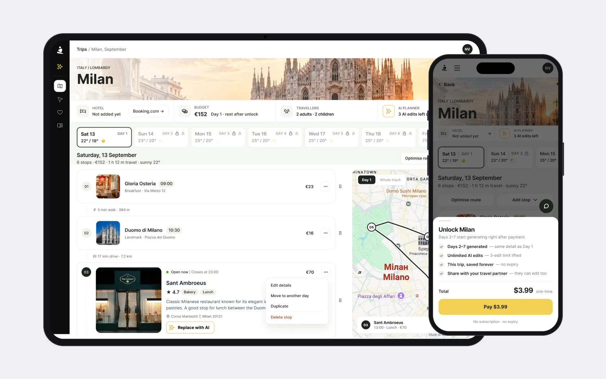
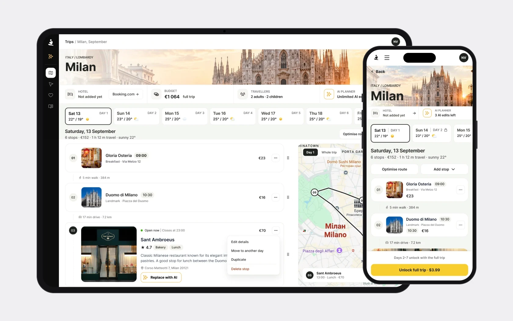
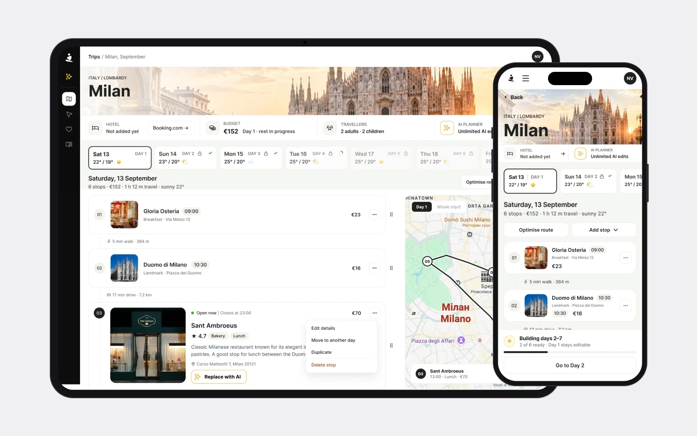

Una pagina – due compiti
La Plan Page aiuta a lavorare con il percorso e allo stesso tempo vende l'accesso al viaggio completo.
La persona riceve un giorno aperto. Per vedere il resto deve sbloccare il viaggio. Su questa pagina deve capire la qualità del piano, cosa si può modificare e le condizioni dell'acquisto.
Sono partita da una domanda: cosa impedisce esattamente di capire il piano e il suo valore prima del pagamento?
Come ho studiato il prodotto
Ho fatto tre passaggi in produzione: viaggi di sette giorni a Milano e a Fano e uno di tre giorni a Parigi – su desktop e su mobile. A parte ho verificato il pagamento, la generazione dei giorni bloccati, l'aggiunta di un hotel e l'aggiornamento del budget.
In parallelo ho analizzato acquisti, completamento del tour, interazioni con l'AI e utenti di ritorno. Ho verificato le conclusioni con lo sviluppatore: alcuni problemi dipendevano dalla logica di generazione, altri da come l'interfaccia la spiegava.
Ho anche verificato in produzione le osservazioni fatte sui vecchi mockup. Per esempio, il problema con i dati di un'altra città non si riproduceva – l'ho tolto dalla lista finale.
Come le metriche hanno orientato le decisioni
Le persone decidono di acquistare in pochi minuti
- Dati
- 13 acquirenti in 90 giorni. Tempo mediano all'acquisto – 250 secondi. In un campione di retention separato di 325 utenti, il 6,6% è tornato nella prima settimana.
- Cosa ho verificato
- La pagina aveva cinque nomi per un solo acquisto. Meteo, mappa e modifica erano elencati tra le funzioni a pagamento, anche se il tour le presentava come gratuite. L'AI illimitata dopo il pagamento non era spiegata.
- Decisione
- Prima priorità: un'offerta chiara – un solo nome per l'acquisto, una linea netta tra gratuito e a pagamento e una spiegazione di cosa si sblocca dopo il pagamento.
NotaI numeri non dimostrano perché le persone non acquistano, ma insieme all'audit sono diventati l'argomento per concentrarsi sul primo incontro con il piano.
Un dato basso sull’uso dell’AI andava verificato
- Dati
- AI Replace aveva solo 3 interazioni registrate su 353 non acquirenti – circa l’1%.
- Cosa ho verificato
- Dopo che il pulsante testuale è stato sostituito da un’icona, l’azione ha smesso di essere registrata correttamente dal tracciamento esistente. Il dato non permetteva di valutare l’uso reale della funzione.
- Decisione
- Non ho usato il dato basso come argomento per eliminare AI Replace. Ho proposto di rendere l’azione più chiara e di ripristinarne la misurazione.
NotaPer una valutazione successiva è importante vedere l’intero scenario: avvio dell’AI → risultato → accettazione o annullamento della modifica.
Il 28% ha completato il tour, ma il problema era anche nei contenuti
- Dati
- Su 318 avvii del tour, 88 sono stati completati – circa il 28%. La durata mediana era di 37 secondi per nove passaggi.
- Cosa ho verificato
- Quattro passaggi descrivevano funzioni che non esistevano o non erano disponibili nello stato attuale. Il tour creava aspettative che la pagina non confermava.
- Cosa ho proposto
- Allineare i suggerimenti alle funzioni e agli stati reali del prodotto e spiegare le azioni nel momento dell’interazione. Ho tenuto le raccomandazioni sul tour fuori dal redesign concordato della Plan Page.
NotaCon così pochi acquirenti non ho tratto conclusioni sull’effetto del tour sulla conversione.
Prima verificare la qualità dei dati
Il 20 luglio sono cambiate contemporaneamente diverse parti del prodotto: la registrazione, il banner dei cookie e il pulsante di modifica. Le statistiche a 90 giorni mescolavano versioni diverse del percorso utente.
Ho chiesto dati separati prima e dopo le modifiche. Ho anche scoperto che gli eventi esistenti non coprivano il lavoro con la tabella – lo strumento principale della pagina. Ho preparato un elenco di 7 eventi prioritari e 4 aggiuntivi.
Spiegare il budget prima dello sblocco
- Problema
- In un viaggio di prova di sette giorni a Milano, prima del pagamento comparivano €386 e dopo €2 456. Ho ricalcolato i costi: la somma iniziale copriva solo il primo giorno per due persone – circa il 16% della stima completa. Nell’interfaccia sembrava il budget dell’intero viaggio. Lo sviluppatore ha confermato: i giorni 2–7 vengono generati solo dopo il pagamento.
- Cosa ho proposto
- Indicare la somma iniziale come budget del giorno disponibile. Dopo il pagamento, mostrare lo stato di generazione e, a calcolo concluso, il budget totale.
- Cosa dovrebbe cambiare
- Le persone capiranno quali costi sono già conteggiati e perché la somma si aggiorna. Il divario tra la stima parziale e quella completa diventa una parte spiegata dello scenario.

Mantenere la tabella e migliorare la navigazione
- Problema
- I giorni si comportavano in modo diverso: il primo aperto, il secondo un’anteprima sfocata, gli altri bloccati. I blocchi ripetuti rendevano difficile scorrere un viaggio lungo, e la mappa non mostrava tutte le tappe.
- Cosa ho analizzato
- Ho confrontato i concorrenti su 15 aree e ho studiato i pattern di Airtable, Notion e Linear. La tabella si è rivelata una base solida per modificare un itinerario, da mantenere.
- Cosa ho proposto
- Un’unica tabella raggruppata per giorno, con un collegamento tra la riga e il suo marker sulla mappa. Mantenere il trascinamento delle tappe, i tratti del percorso e il meteo, ed eliminare gli elementi ripetuti.
- Cosa dovrebbe cambiare
- Le persone passeranno più velocemente da un giorno all’altro e faranno corrispondere l’ordine delle tappe al percorso sulla mappa.

Rendere chiari l’acquisto e lo stato successivo
- Problema
- L’interfaccia mescolava l’acquisto di un viaggio e l’acquisto di crediti. L’offerta predefinita era un pacchetto da $9.99 invece di un viaggio da $3.99. Dopo lo sblocco, il contatore dei crediti poteva aggiornarsi solo dopo un ricaricamento della pagina, e la generazione dei giorni rimanenti non era spiegata abbastanza.
- Cosa ho proposto
- Spiegare l’acquisto singolo attraverso il viaggio e il pacchetto attraverso i crediti. Allineare i nomi e la descrizione dell’accesso, mostrare la generazione e aggiornare il saldo dei crediti in tempo. Ho preparato una matrice di 11 stati per concordare il comportamento della pagina prima di dettagliare i mockup.
- Cosa dovrebbe cambiare
- Le persone vedranno cosa acquistano, se il pagamento è andato a buon fine e quando il piano completo sarà pronto.

Prototipo
Da un viaggio pronto a uno nuovo
Si parte da un viaggio pronto a Parigi; da lì ✦ apre un pannello laterale per creare un viaggio a Milano. Le schermate di creazione sono disegnate in linea con il redesign; la Plan Page è quella del redesign. Il prototipo scorre da solo; passa a «Provalo tu» per navigarlo con i clic.
- Parigi · un viaggio pronto
- Destinazione
- Date
- Creazione del viaggio
- Generazione del giorno 1
- Giorno 1 gratis
- Pagamento
- Generazione dei giorni 2–7
- Il viaggio completo
Come ho definito l’ambito del redesign
Nelle 12–15 ore concordate, la priorità è andata alle modifiche nelle spiegazioni, nell’ordine degli elementi e nella visibilità delle azioni:
- il budget parziale e il suo aggiornamento;
- le condizioni di sblocco;
- gli stati dopo il pagamento;
- la navigazione tra i giorni;
- azioni di modifica chiare.
L’AI con confronto delle modifiche e annullamento, i suggerimenti per le fasce orarie libere e i commenti sulle tappe li ho lasciati per le iterazioni successive.
Come verificare le modifiche
Prima dell’implementazione bisogna concordare gli eventi e registrare i valori di partenza. Per valutare il redesign ho proposto di monitorare:
| Cosa verifichiamo | Cosa misuriamo |
|---|---|
| Chiarezza dell’offerta | Visualizzazione del piano → offerta aperta → acquisto riuscito |
| Facilità di lavoro con l’itinerario | Prima modifica, passaggi tra i giorni, interazioni con la mappa |
| Uso dell’AI | Avvio → risultato → accettazione o annullamento |
| Stato dopo il pagamento | Generazione completata e budget aggiornato correttamente |
A parte, durante i test degli scenari, conviene capire se le persone comprendono cosa include il budget e cosa si sblocca esattamente dopo l’acquisto.
Risultato e conclusioni
La discovery ha trasformato la richiesta generica «semplificare la Plan Page» in un piano di redesign concreto:
- 30 problemi con evidenze e raccomandazioni;
- una struttura proposta con 7 spostamenti di elementi;
- una matrice di 11 stati dell’interfaccia;
- 7 punti per lo sviluppo;
- priorità per ampliare il tracciamento.
Per me la cosa più importante è stata confrontare i numeri con ciò che succede davvero nel prodotto. Il dato basso sull’uso dell’AI si è rivelato inaffidabile a causa del tracciamento, e il divario nel budget era una conseguenza della generazione dopo il pagamento. Queste verifiche hanno cambiato sia la formulazione dei problemi sia le soluzioni proposte.
Nel prossimo progetto verificherei la copertura degli eventi e la cronologia delle modifiche del prodotto fin dall’inizio dell’analisi – prima di interpretare le percentuali.
Prossima fase: concordare il modello di acquisto e l’ambito delle modifiche, completare i mockup e testare gli scenari chiave. L’effetto del redesign sulla conversione e sull’uso del piano si potrà misurare dopo l’implementazione.